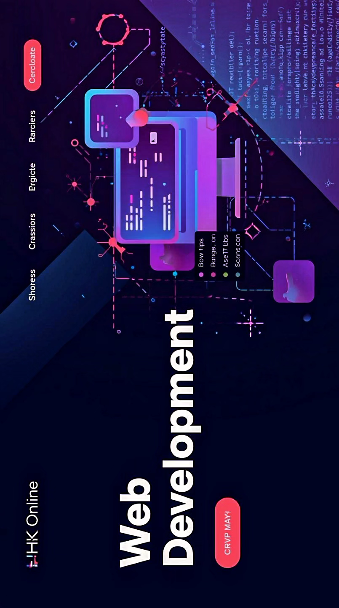

Bienvenue sur HHK Online
Hasan Haddad Kabala, Votre plateforme pour le développement web, e-commerce, gestion financière et actualités
Hasan Haddad Kabala, Votre plateforme pour le développement web, e-commerce, gestion financière et actualités

Un site web professionnel est le premier signe de sérieux pour vos clients potentiels. Il vous permet de présenter votre histoire, vos valeurs et vos services d'une manière soignée et organisée. Contrairement aux plateformes de réseaux sociaux, où l'information est éphémère et soumise aux algorithmes, votre site web vous offre un environnement structuré pour construire la confiance et démontrer votre expertise. C'est la première impression qui compte.
Avec un site web, vous n'êtes plus limité à un public local ou à un algorithme de réseau social. Votre site peut être trouvé par des millions de personnes à travers le monde via les moteurs de recherche comme Google. De plus, il vous donne un contrôle total sur l'image de votre marque. Vous décidez du design, du contenu et de la manière dont les visiteurs interagissent avec votre entreprise, sans les contraintes ni les publicités concurrentes des plateformes tierces.
Un site web n'est pas seulement une brochure en ligne, c'est un moteur de croissance. Il peut être équipé d'une boutique en ligne pour vendre des produits (e-commerce), d'outils de réservation de services, ou de formulaires de contact pour générer des prospects. En automatisant des processus simples, comme la prise de rendez-vous ou les réponses aux questions fréquentes, un site web vous fait gagner un temps précieux que vous pouvez consacrer à la croissance de votre entreprise.
Comprendre vos finances n'a jamais été aussi simple. Nos outils de suivi en temps réel vous fournissent des informations précises et actualisées pour vous permettre de réagir rapidement et de prendre des décisions éclairées.
Tableaux de Bord Intégrés : Visualisez l'état de santé de votre entreprise en un seul coup d'œil. Nos tableaux de bord interactifs transforment vos données financières complexes en graphiques et en diagrammes faciles à comprendre. Vous pouvez suivre l'évolution de vos revenus, identifier les périodes de forte activité et détecter les faiblesses de votre budget. C'est comme avoir un conseiller financier personnel, mais disponible à tout moment.
Analyse de Dépenses Détaillée : Chaque euro dépensé mérite d'être suivi. Nous vous aidons à catégoriser vos dépenses (marketing, hébergement, logistique, etc.) pour vous donner une vue d'ensemble complète. Cette analyse détaillée vous permet de repérer les coûts inutiles et de mieux allouer vos ressources pour maximiser votre rentabilité.
Nous avons mis au point des fonctionnalités puissantes qui simplifient la gestion de vos finances au quotidien, vous libérant du temps pour vous concentrer sur la croissance de votre entreprise.
Planification Budgétaire Intuitive : Définissez des objectifs financiers clairs et suivez vos progrès en toute simplicité. Qu'il s'agisse de prévoir vos revenus pour le trimestre, de fixer un budget pour une campagne publicitaire ou de gérer vos économies, nos outils vous aident à rester sur la bonne voie. Vous pouvez créer des budgets personnalisés, les modifier facilement et recevoir des alertes lorsque vous approchez de vos limites.
Rapports Financiers Personnalisés : Générez des rapports sur mesure en quelques clics. Vous avez besoin d'un bilan pour vos investisseurs, d'un récapitulatif des ventes du dernier mois ou d'un rapport de dépenses pour la déclaration fiscale ? Créez des documents professionnels, clairs et précis pour vos besoins spécifiques. Ces rapports vous donnent une vision stratégique pour la planification à long terme de votre projet.
Synchronisation et Sécurité : Notre plateforme garantit la sécurité de vos données financières. Vous pouvez connecter vos comptes bancaires et vos systèmes de paiement pour un suivi automatique, en toute sécurité. Toutes vos informations sont cryptées et protégées, vous offrant une tranquillité d'esprit totale.
Votre boutique est l'extension de votre marque, et elle doit être unique. Notre plateforme vous donne un contrôle total sur l'apparence et le fonctionnement de votre magasin en ligne.
Personnalisation Complète : Choisissez parmi une variété de thèmes élégants et modernes. Modifiez les couleurs, les polices, les mises en page et les images pour que chaque page reflète l'identité de votre marque. Que vous vendiez des produits artisanaux, des articles de mode ou des biens numériques, votre boutique sera à votre image.
Gestion de Produits Intuitive : Ajoutez, modifiez et organisez vos produits en toute simplicité. Téléchargez des images haute résolution, ajoutez des descriptions détaillées, gérez les variantes (tailles, couleurs) et fixez les prix. Notre interface est conçue pour être aussi simple que la gestion d'un document.
Une transaction réussie dépend d'un processus de paiement et de livraison sans accroc. Nous avons intégré toutes les fonctionnalités nécessaires pour que vos clients puissent acheter en toute confiance et recevoir leurs commandes sans problème.
Passerelles de Paiement Sécurisées : Acceptez les paiements de vos clients dans le monde entier, en toute sécurité. Nous nous intégrons aux principales passerelles de paiement (comme Stripe, PayPal et bien d'autres), ce qui permet à vos clients de payer facilement par carte de crédit, virement bancaire ou portefeuille numérique.
Gestion des Stocks en Temps Réel : Ne perdez jamais une vente à cause d'une rupture de stock inattendue. Notre système de gestion des stocks vous permet de suivre vos inventaires avec précision, de recevoir des alertes lorsque les niveaux sont bas et de gérer facilement les retours.
Options d'Expédition Flexibles : Offrez à vos clients des options de livraison qui répondent à leurs besoins. Configurez les tarifs d'expédition en fonction du poids, de la destination ou de la valeur de la commande. Vous pouvez également intégrer des services de suivi pour que vos clients puissent suivre leurs colis depuis l'achat jusqu'à la livraison.